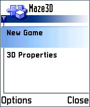
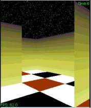
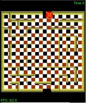
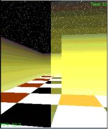
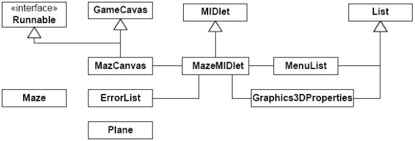
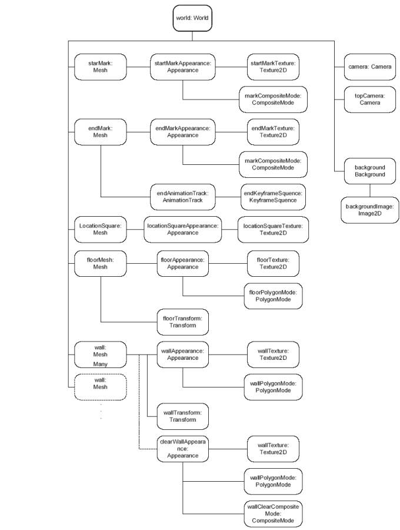
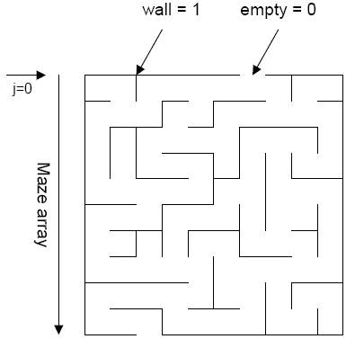
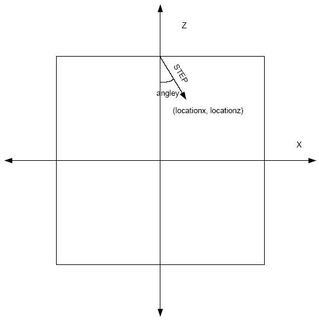

|
||||||||||
| PREV PACKAGE NEXT PACKAGE | FRAMES NO FRAMES | |||||||||
See:
Description
| Class Summary | |
| ErrorScreen | A utility class to display an error message screen. |
| Graphics3DProperties | A class that contains a list of 3D graphics properties. |
| Maze | This class creates a maze. |
| MazeCanvas | The main class used by the 3d maze midlet. |
| MazeMIDlet | A MIDLet that implements a 3D maze game |
| MenuList | A Screen containing list of choices. |
| Plane | A Plane with a given texture and transform |
This example application demonstrates how to use Mobile 3-D Graphics API.
Section contents
5. Summary
This example application demonstrates how to use Mobile 3-D Graphics API. The game developed in this example is a maze-traversing game, where the player looks at the world from a first-person point of view. The game is intended as a demonstration to show some of the features included in M3G API; it is not a fully functional game. As such, the geometry is limited to what it is feasible to do easily in Java™ code, rather than complex meshes, which are produced using third-party tools. The latter method may be the most commonly used, for example, in game production.
You should be familiar with Java™programming and the basics of Mobile Information Device Profile (MIDP) programming.
You should also be familiar with basic 3-D graphics concepts such as transformations, texturing, and blending. M3G contains many concepts and structures based on OpenGL, and for that reason knowledge of the basics of OpenGL is highly advised. Finally, this example uses the game facilities provided in MIDP 2.0, in particular the GameCanvas class.
The example is built using the standard method for building and running Java MIDlets.
When the application starts up, the following screen appears:

Figure: Initial game display
The MIDlet starts by displaying a list of options for the user contained in MenuList. At the beginning, the only options are to start a new game and show the Graphics3D properties.
In the game, the player sees the world from a traditional, first-person point of view and walks around the maze. The objective is to solve the maze in a minimum amount of time. The game doesn’t use any complicated geometry; everything is built using planes. The objects in the game are basically the floor and the maze walls. Two labels were also added to indicate the start and end of the maze. The end marker is animated, moving up and down the y axis. The scene has a background sky simulating a star field. The player is located where the main camera is, as s/he moves around the maze. The maze’s floor is located in the xz plane. Figure Normal view shows what the game looks like.

Figure: Normal view
As an aid to the player, there is a second camera, which is located high in the y axis and looks down on the maze. This camera can be used to view the maze from the top. It is complemented by a small square that indicates the player’s location.

Figure: Top view
Another aid for the player is the ability to make walls semitransparent. By pressing the Fire button, the wall in front of the player is made semitransparent. The next time the player moves, the wall returns to the normal view.

Figure: Semitransparent wall
4.1 Overview
The game is designed for MIDP 2.0, and uses the GameCanvas class. It contains a thread that is running continuously, following the usual pattern for MIDP 2.0 games
|
while(playing) { checkInput(); draw3D(); draw2D(); flushGraphics(); } |
The method checkInput will verify the state of the keys and update the player’s position if necessary. The player can move forward and backward, and rotate to the right or left. The player position will be used to update the main camera’s location. If the Fire button is pressed, the nearest wall in front of the player will be selected and made semitransparent. In method draw3D, the scene graph is rendered by binding the target, advancing the animation, and calling render(world, as follows:
|
try { g3d.bindTarget(g); binded = true; world.animate((int)(System.currentTimeMillis() - gameStart)); g3d.render(world); } finally { // release the target if (binded) { g3d.releaseTarget(); } } |
The method draw2D in turn will write text to the upper and lower parts of the screen. It is important to do the 2-D drawing after the 3-D rendering is ready, since upon clearing the 3-D buffers the 2-D part will be removed. It is also important not to mix 2-D and 3-D Graphics while the target is bound. Although M3G does not forbid it, performing 2-D drawing commands onto a Graphics object while bound has unpredictable results.
The game’s MIDlet class takes care of holding the display and providing transitions between the different screens. The game has three screens: MazeCanvas, where the game is actually played; MenuList, which contains a list of options to play the game; and Graphics3Dproperties, which displays the properties of the underlying implementation. Figure 5 shows the class diagram.

Figure: Class diagram
The Maze and Plane classes are utility classes to build the game maze and meshes.
The game will be rendered in retained mode, with the scene graph constructed in code. The graph starts with a World object that contains two cameras. The first one will move with the player, and the second one is fixed on top of the maze. The background contains an image with a star field. The rest of the components are geometrical objects, all of them rectangular planes. That includes the floor, the walls, the location square, and the start and end marks. Each object includes an appearance. Notice that there are no lights in the world as the appearance is just made by textures rather than materials.
The end mark mesh contains an animation track that updates its position up and down the y axis. Every time the scene is rendered, the time is increased and the World’s animate method is called to advance the animation.
Figure Scene Graph shows a diagram of what the scene graph looks like, starting from the World object.

Figure: Scene Graph
Instead of having a fixed set of mazes to play, the maze is randomly generated every time a game is started. The maze is generated using a depth-first search algorithm. Each row of the maze is stored in bits of a long value where walls are 1s and spaces are 0s. That limits the maximum width of the maze to 64. The algorithm starts with a maze that has all walls up, and it creates a path between the spaces. The Maze class contains the maze generation code, and it also builds the necessary planes. For simplicity, the maze is always square.

Figure: Maze
Square planes describe all the geometry in the world. The Plane class takes care of building standard squares located in the plane xy with vertices from (-1, -1) to (1, 1). The square itself is made out of four triangles so that it is double sided. This is important since the player can see the walls from the front or the back. The Plane class takes a Transform object that modifies the plane, making it suitable for the game. The createMesh method generates the actual Mesh with the desired location, rotation, and scaling transformation.
The floor is built using a Transform that rotates the plane 90 degrees to locate it in the xz plane, and scales it to fit the desired size. The floor’s appearance is a mosaic-like texture that is repeated ten times. Since the floor is large in terms of the scene, and the texture is repeated many times, perspective correction is enabled.
The walls are built in the createPlanes method of the Maze class. Each wall is a plane translated and scaled to its designated position. Vertical walls are also rotated 90 degrees on the y axis. The decision was made to give some sort of lighting to the walls, making the lower part lighter that the higher part. There are several ways to achieve this, for example by attaching a Material and using lights, or setting vertex colors to a similar, lighter shade in the lower part. Another choice, and the one used here, is to use a gradient texture that is lighter in the lower part. The texture is repeated across the length of the wall. In parallel, an Appearance was constructed that uses the same texture but contains a CompositeMode using ALPHA_ADD-blending. This texture will be used when making a semitransparent wall.
The start and end marks are located at the beginning and end of the maze. Each mark is textured using a rectangular image containing the “Start” and “End” labels. The textures contain an alpha channel for the area outside the text and their blending mode is set to ALPHA.
The location mark uses a texture clamped to the square and is set as not renderable. Whenever the game is set to use the top view, the square is made renderable and it is moved to the camera’s position.
As mentioned previously, the player movements are actually camera movements. The game follows the usual convention of using up and down to move forward and backward, while left and right rotate the camera. The variables locationx and locationz are used to keep track of the player’s position, and angley indicates the orientation of the camera. When right and left are pressed, angley is modified, and when up and down are pressed, the location is updated. The variables stepx and stepz are used to keep note of how much to advance in each forward and backward step. This reduces the need to repeat sine/cosine calculations. At the beginning, the player is on the upper wall looking to the negative z axis. Figure Player movements shows how movements are carried out.
When moving, it is important to avoid crossing walls. While there are many ways to do this, the picking feature of M3G is handy. Find the wall nearest to the direction in which the player is moving, calculate the distance, and if it is too small, disallow the movement. Picking is done at the center of the screen since the player is going in the direction is looking at. Picking uses the current camera’s near plane as the origin of the picking ray, and when the player move backward, the camera is temporarily reversed to detect walls on the player’s back.

Figure: Player movements
When a Fire press is detected, picking is used again to detect which wall is in front of the player. If a wall is found, its alpha factor is set to 0.8 and its appearance is set to clearWallAppearance. This makes the wall semitransparent, showing other walls behind it. When the user moves again, the wall returns to its original appearance and alpha factor.
The background is made of a star field image. Since the background is set in screen coordinates, when the player rotates, the background stays in the same place, giving a nonrealistic impression. To solve this problem, whenever the player turns right or left the background is shifted using the cropping mechanism. This gives the illusion of a star field that is in synchrony with the player’s movements.
The MIDlet starts by displaying a list of options for the user contained in MenuList. At the beginning, the only options are to start a new game and show the Graphics3D properties. When the user starts a new game, a Maze object is created, the maze is generated, and the scene graph is built in the MazeCanvas init method. Past this the start method creates a new Thread that will drive the drawing loop. Meanwhile, a timer is being updated comparing the start of the game’s time with the current time, to keep track of how long the game has been played.
The stop method halts the thread and freezes the timer. This is done, for instance, when the main menu is displayed again or the application is externally paused. The keyPressed method listens for key events, and in case they do not correspond to standard values the MenuList is presented. It is possible to switch from the normal view to the top view, and vice versa. It is also possible to halt the current game and start a new one.
The game is finished when the player reaches the end mark. Each time the player moves, his/her position is tested to see if it is close enough to the end of the maze. When it is, the game ends and the timer is stopped.
The example has demonstrated how to use the Mobile 3-D Graphics API For Java™ Platform, Micro Edition (M3G).
|
||||||||||
| PREV PACKAGE NEXT PACKAGE | FRAMES NO FRAMES | |||||||||